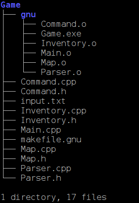
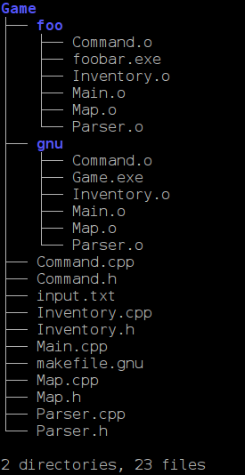
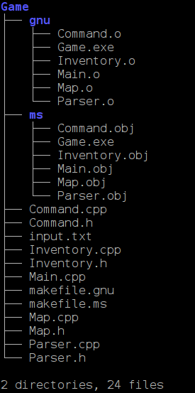
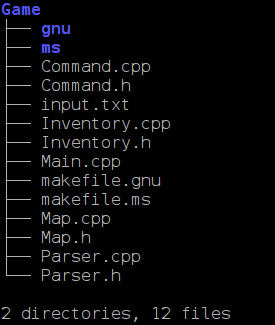

<html>
<head>
<link rel="stylesheet" type="text/css" href="../new.css">
<title>CS 170 - Lab Assignment</title>
</head>

<style>
body {
   background : #ffffff; 
   margin-left : 50;
   margin-right : 20;
   background : url("../../../../../../images/notebook.jpg");
   }

.Extra
{
  margin-left: 0;
  /*font-size : 12pt;*/
  /*font-weight : bold;*/
  background-color: #ffffff; 
  border-style: solid;
  border-color: teal;
  border-width: thick;
  vertical-align: top;
  padding-top: 3px;
  padding-bottom : 3px;
  padding-left: 10px;
  padding-right: 10px;
}   

</style>


<body>  
<center>
<h1>CS 170 - Lab Assignment<p></h1>

</center>

<p class="technote">
This lab is also going to be considered a practice
lab. This means that you won't receive a grade for it, nor do you have to submit it. The submission server
will be available for you to submit it, if you want to be able to say to me, <i>"I did it and submitted
it. I'm the <b>good</b> kind of student! Please remember me!"</i>
(Of course, it's also good to do if you ever want to be a TA or need a reference or something.)
<br><br>
Don't ever fall into
the trap of thinking that, just because you don't have to submit something, it's not worth doing. That
will definitely affect your success at Digipen.
</p>
<p class="Extra">
There are two makefiles that you need to submit, one is for GNU's g++ and the other is for Microsoft's
compiler. Since I'm not going to show you how to use Microsoft's command line compiler,
<b>the Microsoft makefile is optional</b>. But, if you choose not to do it, you still have to submit
a file named <tt>makefile.ms</tt>. To do this, just create an empty file called <tt>makefile.ms</tt>
so that the submission server doesn't complain about the missing file.
</p>


<p class="SectionHeader">
Information
</p>


In this lab, you will practice your knowledge of <tt><b>make</b></tt> to build a few simple projects. 
You are given the source code for all of the projects, so there is no coding to do. 
The only file you will be editing is the <tt><b>makefile</b></tt>. If you did the practice lab last
week, this should only take you a short while to complete. In fact, if you use that as a starting
point for this lab, it shouldn't take more than 20 minutes.
<p>

<blockquote>
<p class="technote">
Due to the inherent difficulties in automating the grading for <tt>makefiles</tt>, the submission server 
will not be compiling/running anything. When you upload your file, the server will simply check to 
make sure that you've submitted the correctly named file. I will then download the submissions and
store them on my computer for later use.
</p>
</blockquote>

References for <tt>make</tt> can be found here: <a href="http://www.gnu.org/software/make/manual/make.html">make utility</a>.
<p>
The computers at Digipen should all be properly configured to use GNU's <b>make</b> utility. If you 
are using your own computer, you must be sure to use GNU's <b>make</b>, not any other 
<b>make</b> utility. (There are several other programs that may install their own versions 
of make.) This means that <tt>C:\cygwin64\bin</tt>  (or wherever you installed Cygwin)
must be in the PATH before any other programs that provide the <b>make</b> utility. 
If you type <b>make</b> in an empty directory, you should see something like this:

<blockquote><pre>
make: *** No targets specified and no makefile found.  Stop.
</pre></blockquote>

This indicates that you are using the correct version of <b>make</b>. If you see something 
else

<!--

<blockquote><pre>
MAKE Version 5.2  Copyright (c) 1987, 2000 Borland
Fatal: Unable to open makefile
</pre></blockquote>

or this: 

<blockquote><pre>
MAKE Version 5.4  Copyright (c) 1987, 2010 Embarcadero Technologies, Inc.
Fatal: Unable to open makefile
</pre></blockquote>
-->

it indicates that GNU's <b>make</b> is not in the PATH first, but another version of <b>make</b> 
is. It is not uncommon for other development environments to include their version of <b>make</b>.
<p>
To find out which version of <b>make</b> you're using, type this:

<blockquote><pre>
make --version
</pre></blockquote>

On Windows, using the Cygwin utilities, you should see something like this:

<blockquote><pre>
GNU Make 4.2.1
Built for i686-pc-cygwin
Copyright (C) 1988-2016 Free Software Foundation, Inc.
License GPLv3+: GNU GPL version 3 or later <http://gnu.org/licenses/gpl.html>
This is free software: you are free to change and redistribute it.
There is NO WARRANTY, to the extent permitted by law.
</pre></blockquote>

If you are not getting the GNU Make version, you'll need to fix something
before you can continue with the lab. I suspect that this should not happen to anyone, as you
were supposed to practice with makefiles last week.

<p>
<hrx width="90%">
<p>

<p class="technote">
This first part of the lab is to make sure you're set up. It is very 
simple, but will at least demonstrate to you that you have a properly configured 
system. This is a trivial assignment. Please don't ask questions on the forum
about the "real" lab below until you've completed this. This will tell everyone
that you know what you're doing with very simple <b><tt>makefiles</tt></b> before
doing the more complicated one below.
</p>

<p>
<hr width="100%">
<p>

<ol start=1>
	<p>
	<li>Create a directory named <tt>simple</tt> that will contain all of the files for 
		part 1. Then, create the very simple makefile with one 
		source file. The makefile should be named <b><tt>makefile</tt></b>

<p>	
This is the program to build with each makefile. Name the file <tt>hw.cpp</tt>.
Yes, it's C++ code and some of you have never programmed in C++ before. That's fine. You
don't need to understand the code (or even run it) to create the makefile.

<pre class="sourcecode"><code><font color="990099">#include &lt;iostream&gt;</font>

<b>int</b> main()
{
  std::cout &lt;&lt; <font color="#9933CC">&quot;Hello, World!&quot;</font> &lt;&lt; std::endl;
    
  <b>return</b> 0;
}
</code></pre>
	
These are examples showing the name of the output files and options used for each compiler:
<blockquote>
<b>GNU g++</b> 
<blockquote><pre>
<b>g++</b> -o hw-gnu hw.cpp -Wall -Wextra -Werror -ansi -pedantic
</pre>

</blockquote>

</blockquote>

<blockquote>
<b>Microsoft's compiler (optional)</b>
<blockquote><pre>
<b>cl</b> -W4 -WX -EHa -Za -Fehw-ms.exe -D_CRT_SECURE_NO_DEPRECATE hw.cpp
</pre>
There must be no space between the <tt><b>-Fe</b></tt> and the filename (<tt><b>hw-ms.exe</b></tt>).


</blockquote>
</blockquote>

Notes:
<p>
<ul>
<li>Here's an incomplete <a href="makefile.html">makefile</a> for you to start with. It's only 
	missing some macro definitions.	Complete this for <tt><b>g++</b></tt>. Once 
you've got it working with the GNU compiler, use it as a starting point for 
<tt>makefile.ms</tt> (optional)<p>
<li>Each compiler will name the object files differently.</li>
<p>
	<li>The command line options for the compiler shown above will need to be used to compile the files
		in part 2.</li>
<p>
<li>You may need to run a <tt><b>clean</b></tt> before changing compilers. In other words, if 
	you've just built the project with the Microsoft compiler, you should perform a 
	<tt><b>clean</b></tt> before building a GNU executable. Otherwise,
		you may get very bizarre results if you have the same object file names as the linker 
		will try to link incompatible object file formats.
    This was all explained last week when I demonstrated how to use <tt>make</tt>.</li>
<!--
	-->
</ul>
<p>
</ul>

<!--*********************************************************************************-->
<!--*********************************************************************************-->
<!--*********************************************************************************-->
<p>
<hr width="100%">
<p>

Now that you've proven that you know how to use <b>make</b> correctly and that your system
is properly configured, you can do the "real" lab.
	
<li> Create a makefile to build a simple Game Project (<a href="https://azrael.digipen.edu/~mmead/www/Courses/2020/winter/cs170/labs/week2/Game.zip">Game.zip</a>). 
	There are 10 files in the zip file.
	You'll have to
	figure out the dependencies by looking at the include files at the top of each .cpp file.
  Or, you can use the <tt>-MM</tt> option with <i>gcc/g++</i> that I showed you. For example:
<blockquote><pre>
g++ -MM Main.cpp
</pre></blockquote>
will produce this output:
<blockquote><pre>
Main.o: Main.cpp Command.h Parser.h Inventory.h Map.h
</pre></blockquote>

	 <p>
	 Remember that a .cpp file is dependent only on "local" header files that are specified
		using double quotes. (e.g. <tt>"Parser.h"</tt>). Header files within angle brackets are NOT
		considered a dependency (e.g. <tt>&lt;string.h&gt;</tt>).
	<p>

The makefile will be used to build the game project. The name of the makefile should be
<tt>makefile.gnu</tt>.

The makefile and all of the source files for the game should be in a directory named <tt>Game</tt>.
Create that with the <tt>mkdir</tt> command and put all of the files from the zip
file into this directory. (Don't do it in the makefile.)

<blockquote><pre>
mkdir Game
</pre></blockquote>
 
There should also be a directory inside the <tt>Game</tt> directory named <tt>gnu</tt>. 
Change directory into <tt>Game</tt> and create it:

<blockquote><pre>
cd Game
mkdir gnu
</pre></blockquote>

Once you've created your makefile, you should be able to issue this command to build the project:

<blockquote><pre>
make -f makefile.gnu
</pre></blockquote>

This will build all of the files for the project in the appropriate directory using the appropriate 
options for the compiler. The name of the resulting executable in the <tt>gnu</tt> directory will
be named <tt><b>Game</b></tt>.

<p>
<b>Note:</b> If you build this under Windows, the name of the executable will have a <tt>.exe</tt>
appended to it (<tt><b>Game.exe</b></tt>). Linux and Mac won't have this extension.
<p>


To delete all of the files in the subdirectories, your makefile should support the <tt><b>clean</b></tt>
target like this:
<blockquote><pre>
make -f makefile.gnu clean
</pre></blockquote>

The command to erase/delete files is <tt>rm</tt>. This is part of the Cygwin utilities.
 DO NOT use a Windows-only internal shell command (<b>del</b>) to delete the
files or your makefile will fail if I run it on a Linux or Mac computer.
<p>

Here's a simple example showing use of the <tt>OUTDIR</tt> macro: Assuming that <tt>OUTDIR=somepath/</tt> is set in your makefile:
<p>
	
<blockquote>
GNU g++:
<blockquote><pre>
<b>g++</b> -o $(OUTDIR)Main.o -c Main.c
</pre></blockquote>
</blockquote>

<!--
<blockquote>
Microsoft cl:
<blockquote><pre>
<b>cl</b> -Fo$(OUTDIR)Main.obj -c Main.c
</pre></blockquote>
</blockquote>
-->

<!--
<blockquote>
Borland 5.82
<blockquote><pre>
<b>bcc32</b> -o $(OUTDIR)Main.obj -c Main.c
</pre></blockquote>
</blockquote>
-->

In makefiles under Windows, if you put paths in macros, you need to either use a single forward 
slash: / (Unix style), or a double backslash: \\ (DOS style).
Under Linux and Mac OS X, you should use the single forward slash. So the example above under 
Windows can be either of these:

<blockquote><pre>
OUTDIR=somepath/
</pre></blockquote>
      
      or
     
<blockquote><pre>
OUTDIR=somepath\\
</pre></blockquote>

<blockquote>
<p class="technote">
<b>Note:</b> It is recommended to use the single forward slash, as that will allow the makefiles
to be compatible with all 3 operating systems.
</p>
</blockquote>

You <strong>must</strong> use these variables (macros) in your makefiles for:
<p>
<ul>
	<li>The compiler (<tt>CC</tt>)</li>
	<li>The compiler flags/options (<tt>CFLAGS</tt>)</li>
	<li>The output directory (<tt>OUTDIR</tt>)</li>
	<li>The list of object files (<tt>OBJECTS</tt>)</li>
	<li>The name of the executable (<tt>EXE</tt>)</li>
</ul>
<p>
You may use other macros if you wish, but the ones listed above are required.
<p>

These are the compiler options that you will need to <i>compile</i> the source files with <b>g++</b>:
<p>
<blockquote>
	<table border=1 cellpadding=10 cellspacing=0>
		<tr><td align="right">GNU</td><td><tt>-c -g -Wall -ansi -pedantic -Wextra -Werror</tt></td></tr>
<!--		<tr><td align="right">MS</td><td><tt>/c /W4 /D_CRT_SECURE_NO_WARNINGS /nologo /Za /WX</tt></td></tr>-->
	</table>
</blockquote>
<p>
When in doubt, you can query the compiler for help on the command line options with either of these:
<blockquote><pre>
g++ --help
man g++
</pre></blockquote>

The first one gives you a brief help screen, and the second one gives you all the gory details.
<p>

<blockquote><p class="technote">
<b>Just to be clear</b>: You can not modify the source files (.cpp or .h) in anyway. The makefiles
must use the source files exactly as they are given to you. This should be obvious because you are
not submitting any source files, just the makefile. I will provide the source files and build
the project with your makefile.
</p>
</blockquote>

The directory structure should look like this after a successful build. 
Notice how the source files are in the <tt><b>Game</b></tt> directory and that the executable
and all of the object files are in the <b><tt>gnu</tt></b> directory:

<blockquote><pre>

</pre></blockquote>

<b>Tests to run</b> (This is how to test your makefiles)
<p>
<ol>
	<li>In the <tt>Game</tt> directory, create a subdirectory named <tt>foo</tt> and then run:
<blockquote><pre>
make -f makefile.gnu OUTDIR=foo/
</pre></blockquote>
This should build everything in the new <tt>foo</tt> directory. If it doesn't, you've done
something wrong.</li>
<p>
<li>Perform a clean on the <tt>foo</tt> directory:

<blockquote><pre>
make -f makefile.gnu clean
</pre></blockquote>

and then run this:

<blockquote><pre>
make -f makefile.gnu OUTDIR=foo/ EXE=foobar
</pre></blockquote>

This should build everything in the <tt>foo</tt> directory again, but the executable should 
be named <tt>foobar</tt> (or <tt>foobar.exe</tt> on Windows.) If it didn't work, you've 
done something wrong.</li>

</ol>
<p>

After performing #2 above, this is what the files should look like (on Windows):

<blockquote><pre>

</pre></blockquote>

If your tests were successful, you can delete the <tt>foo</tt> directory and its contents.

<p>

<b>Playing the game</b>
<p>
To "play" the resulting "game", type <tt>help</tt> after invoking the game from the command
line. It's obviously a very simplistic text-based game. There is a response file (<tt>input.txt</tt>)
that you can use to automate the input to the game. Download it 
<a href="input.txt">here</a>. (It's also in the .zip file above). You use it like this:

<blockquote><pre>
Game &lt; input.txt
</pre></blockquote>
and it will automate the playing of the game for you. This is how you automate the testing
as you learned in CS120. Finally, since this is a text-based game (and doesn't include Windows.h),
it will run on any platform (Windows, Linux, Mac, etc.)

</ul>
<p>
<hr width="90%">
<p>

<li><b>Optional:</b> Building the game under Windows with Microsoft's compiler.
You will have to have Microsoft's command line compiler installed and configured properly
in order to complete this optional portion.
<p>
<blockquote>
<p class="technote">
If you don't have Microsoft's compiler or access to a Windows computer, you don't have to
do this. Most of you are working with Windows and may have used Microsoft's compiler before,
so this may be easy for you. However, it is optional so no one will be penalized for not
doing this.
</p>
</blockquote>
For Microsoft's compiler, these are the compiler options that you will need:
<p>
<blockquote>
	<table border=1 cellpadding=10 cellspacing=0>
		<tr><td align="right">MS</td><td><tt>/c /W4 /D_CRT_SECURE_NO_WARNINGS /nologo /Za /WX</tt></td></tr>
<!--		<tr><td align="right">MS</td><td><tt>/c /W4 /D_CRT_SECURE_NO_WARNINGS /nologo /Za /WX</tt></td></tr>-->
	</table>
</blockquote>
<p>
When in doubt, you can query the compiler for help on the command line options with this:
<blockquote><pre>
cl /?
</pre></blockquote>
<p>
That's a lowercase 'C', lowercase 'L', space, forward slash, and question mark.
<p>

You'll need to create a directory named <tt>ms</tt> inside the <tt>Game</tt> directory. You
should make a copy of the makefile you created above and name it <tt>makefile.ms</tt>. You
can then edit this file to deal with Microsoft's command line compiler. To use this makefile,
you'll need to specify this when calling make:

<blockquote><pre>
make -f makefile.ms
</pre></blockquote>

Things to change in <tt>makefile.ms</tt>:
<p>
<ul>
	<li>The name of the command line compiler is <tt>cl</tt>.
   You'll have to make sure that
		Microsoft's compiler is properly configured for command line use.</li>
	<li>The <tt>CFLAGS</tt> must be set to the options shown above.</li>
	<li>The <tt>OUTDIR</tt> macro needs to be set to <tt>ms</tt> instead of <tt>gnu</tt>.</li>
	<li>When specifying directories in Windows, you can either use the forward slash as shown with
		GNU's makefile, or a double-backslash <tt>\\</tt>. As stated previously, the recommended
		approach is to use a single forward-slash since that will work on any system.</li>
	<li>The object files should end with a <tt>.obj</tt> extension instead of a <tt>.o</tt> extension.</li>
	<li>The command line option to name the object files is <tt>-Fo</tt> and the command line option
		to name the executable is <tt>-Fe</tt> with no spaces. For example
<blockquote><pre>
-FoMain.o
-FeGame.exe
</pre></blockquote>		
</ul>

The resulting files and directories will now look like this:

<blockquote><pre>

</pre></blockquote>

After cleaning with both makefiles:

<blockquote><pre>

</pre></blockquote>

To see output like that shown above, use the <i>tree</i> command. You should be in the parent
directory of Game and type this:

<blockquote><pre>
tree Game
</pre></blockquote>

Your output may look slightly different. The <i>tree</i> program is part of the Cygwin utilties,
although Windows does include an older tree program, but it works differently and not as 
well (of, course).
<p>
If you're on Windows and want to see <i>all</i> of your files, type this:

<blockquote><pre>
tree c:\
</pre></blockquote>

There will be a <b>LOT</b> of output! To just see the directories (not files), type this:

<blockquote><pre>
tree -d c:\
</pre></blockquote>

To see all of the cool things that <i>tree</i> can do, type this:
<blockquote><pre>
tree --help
</pre></blockquote>

Have fun!

<hr>

<br><br><br><br>

</body>
</html>

